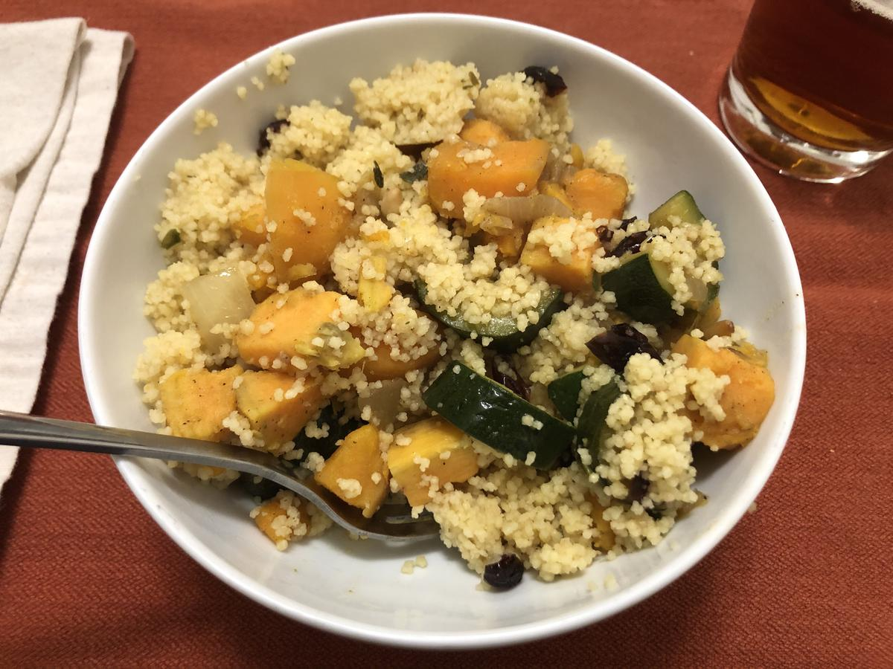

Based on Chrissy Teigen Cravings, pg. 193
Personal rating: 4 / 5

3 Tbsp olive oil (plus more for drizzling)
1 large onion, chopped
1.5 tsp kosher salt
1/2 tsp ground cinnamon
1/2 tsp ground cumin (or 1/4 tsp coriander)
1/4 tsp cayenne pepper
1 lb sweet potato, peeled and cut into 1.5 in chunks
1 lb zucchini, cut into 2 in chunks
1.5 cups vegetable (or chicken) broth
cilantro garnish, optional
Note: we couldn't find pine nuts, so we used a pine nut boxed couscous. For the full recipe with the nuts, see the cookbook!